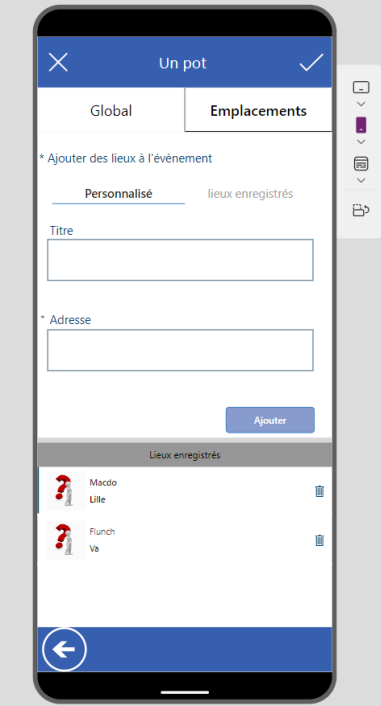

CV détaillé numérique
Durée : 03 juin 2024 – 31 juillet 2024
Entreprise : Département du Nord, Lille
Au cours de mon stage, j’ai développé une application mobile de gestion d’événements internes avec Power Apps. Cette application permet aux employés d’organiser des rassemblements non professionnels, simplifiant la création et la gestion des événements. L’application inclut un système de vote, une intégration à Microsoft Teams et un stockage de données via SharePoint. J’ai également automatisé certains processus avec Power Automate et optimisé l’ergonomie mobile. Une documentation technique a été rédigée pour assurer la continuité du projet.
Ce stage à été l'occasion pour moi de découvrir aussi le milieu du logiciel propriétaire qui est aussi très présent dans les entreprises de grande échelle. Ces logiciels peuvent être également une source d'idée supplémentaire pour la réalisation d'interface UX adapté pour le plus grand nombre d'utilisateur
